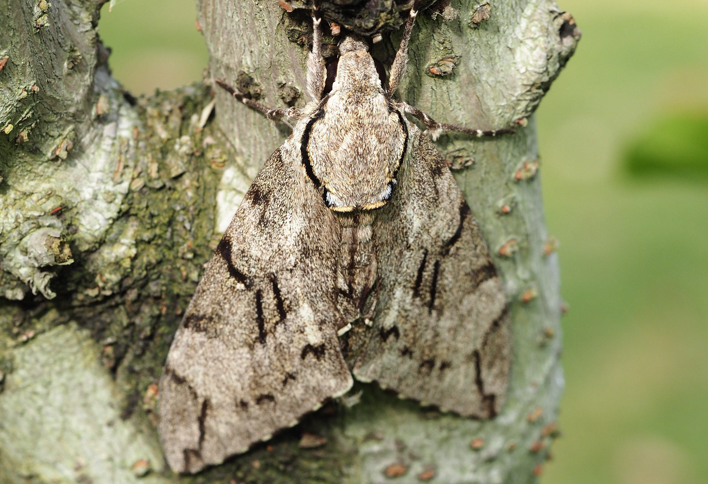
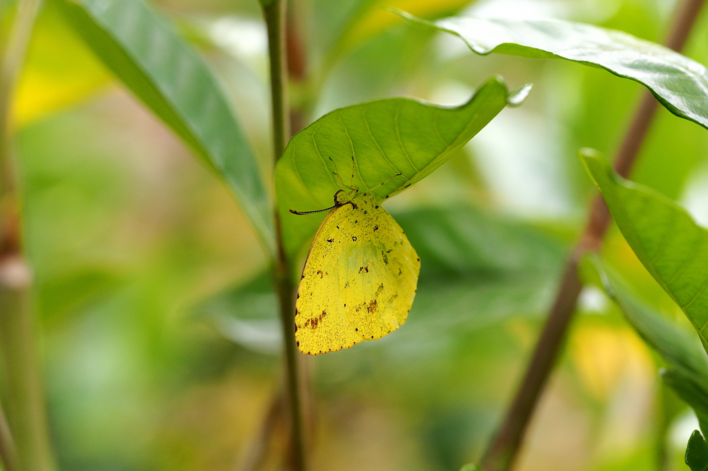
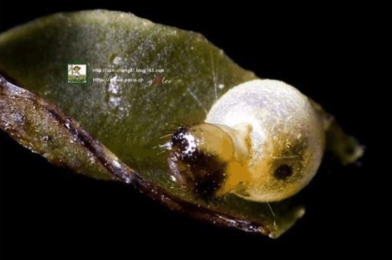
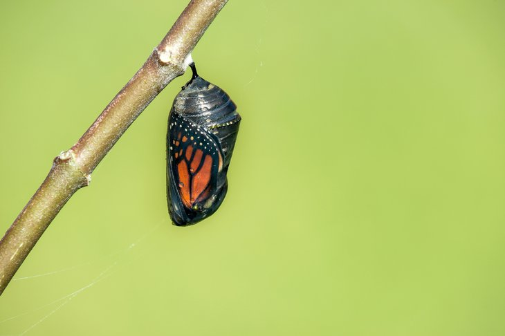
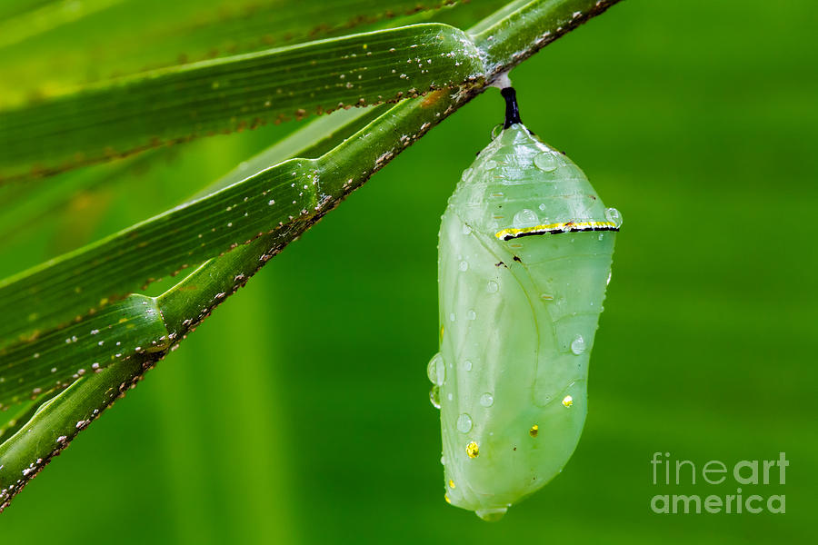

蝴蝶的演变
蝴蝶
蝶，通称为“蝴蝶，全世界大约有 14000 多种，大部分分布在美洲，尤其在亚马逊河流域品种最多。中国有 1200 种。

蝴蝶一般色彩鲜艳，身上有好多条纹，色彩较丰富，翅膀和身体有各种花斑，最大的蝴蝶展翅可达28～30厘米左右，最小的只有 0.7 厘米左右。 体形大多在5~10cm之间，身体分为头、胸、腹；两对翅；三对足。在头部有一对锤状的触角，触角端部加粗，翅宽大，停歇时翅竖立于背上。
蝴蝶和蛾类的主要区别是蝴蝶头部有一对棒状或锤状触角，蛾的触角形状多样。

蝶与飞蛾的区别之处
蝶类特点
- （1）多数蝶类翅膀正面的鳞粉色泽亮丽，翅表面不被毛绒。少数蛱蝶科的蝶类后翅根部被有较明显的毛绒。
- （2）多数蝶类有顶端膨大的棒状触角。
- （3）蝶类四翅合拢竖立于背上休息的方式。
- （4）蝶类躯干上被毛稀疏（需与蛾类比较）。
- （5）蝶类腹面可见的后翅根部呈弧形（贴接式），无翅缰。有助于飞行的速度提升，是因为蝶类在白天活动普遍飞行速度快于蛾类。
- （6）蝶的蛹赤裸，无茧。
- （7）蝴蝶的活动时间严格定义在白天。
飞蛾类特点

|
 |
- （1）蛾子不分昼夜地飞，大多数都是棕色或者黑色，很少有几种颜色与蝴蝶一样鲜艳。
- （2）多数蛾类触角顶端呈针尖样弯曲或整个触角呈羽毛状，少数蛾类（天蛾科、斑蛾科）由于白天活动所以触角与蝶类相似。
- （3）蛾类多数都是将四翅平铺休息。
- （4）蛾类躯干部被毛一般都很浓密，就像天蛾科的蛾类飞行期间很容易与蜂鸟混为一谈。
- （5）大多数蛾类的腹面后翅根部是平滑的，弧度很小，这跟蛾类在夜间飞行速度慢有关。
- （6）蛾的蛹有茧。例如，蚕丝就是从蚕蛾的茧提取的。
蝶与飞蛾相同之处
- 成虫体表及翅上被有鳞片，口器虹吸式。
- 幼虫大都是植食性，颇多为农业害虫。
- 完全变态。
- 都有三对足。
物种天敌
蝴蝶的天敌主要有：蚂蚁、甲虫、鸟、蝇、蜥蜴、蛙、蟾蜍、螳螂、蜘蛛、黄蜂、寄生蜂等。
翅膀用途
它们多彩的翅膀不仅仅是为了让人们大饱眼福。五彩缤纷的颜色是用来隐藏、伪装和吸引配偶的。
- 隐身术

- 豹纹诱惑

中国种类
- 凤蝶科
- 粉蝶科
- 蛱蝶科
- 灰蝶科
- 灰蝶科
- 环蝶科
- 斑蝶科
- 眼蝶科
- 珍蝶科
- 喙蝶科
- 弄蝶科
繁殖过程
蝴蝶是完全变态的昆虫，即一生会经过四个阶段：卵、幼虫、蛹、成虫。

- 卵 蝴蝶的卵一般为圆形或椭圆形，表面有蜡质壳，防止水分蒸发，一端有细孔，是精子进入的通路。不同品种的蝴蝶，其卵的大小差别很大。蝴蝶一般将卵产于幼虫喜食的植物叶面上，为幼虫准备好食物。
蝴蝶卵的形状因种类不同而各异。

|

|
- 幼虫
幼虫孵化出后，主要就是进食，初出卵壳的幼虫先吃掉它的卵壳，然后会吃掉大量植物叶子，幼虫的形状多样，多为肉虫，少数为毛虫。蝴蝶危害农业主要在幼虫阶段。随着幼虫生长，一般要经过几次蜕皮。
从卵中孵化到第一次蜕皮叫一龄。
在一次与二次蜕皮之间叫二龄。
蝴蝶幼虫一般蜕皮四次，即经过五个龄期。
|  |

|
|
- 蛹 幼虫成熟后要变成蛹，幼虫一般在植物叶子背面隐蔽的地方，用几条丝将自己固定住，之后直接化蛹，无茧。
|  |  |

|

|

|

|
- 成虫
蛹成熟后，从蛹中破壳钻出，但需要一定的时间使翅膀干燥变硬，这时的蝴蝶无法躲避天敌，属于危险期。翅膀舒展开后，蝴蝶就可以飞翔了，蝴蝶的前后翅不同步扇动，因此蝴蝶飞翔时波动很大，姿势优美，所谓“翩翩起舞”，来源于蝴蝶的飞翔。 一般蝴蝶成虫交配产卵后就在冬季到来之前死亡。

|
|

|

|
- 成虫 - 羽化过程 破壳而出，拖着它又小又萌的翅膀在到处爬行，寻找适合羽化的地方，让自己倒挂起来，重力会在伸展翅膀时帮点小忙。然后它会有节奏的压缩自己鼓胀的腹部，让体液通过翅脉充入翅膀，从而展开柔软的翅膀。这个过程需时不同种类长短不一。常见的黄钩蛱蝶展开翅膀仅需15秒钟，也就是一瞬间的事；冰清绢蝶完整的展开翅膀，花了整整30分钟的时间，整个过程甚是艰难。
毛毛虫在蛹中是如何变成蝴蝶的？
在这个阶段，虫蛹的体内经历着剧烈的分解和重组工作，很多细胞会被从已有的组织上消化掉，被用来重组身体其他的器官，发展新的功能。
CT技术扫描虫蛹
第一个是用一种叫做micro-CT技术扫描虫蛹的实验，实验过程中可以用X光分层扫描同一个虫蛹，然后将每一层扫描结果合成3D立体图形，揭示了虫蛹在变化过程中，那些组织发生了什么变化
图中，竖排的是同一个虫蛹在第1，4，7，10，13天的变化，横排是三个不同的扫面角度。
红色的是虫子的消化系统，可以看出在开始的几天，虫子的消化道迅速的变小，同时变窄，表示在成虫中，进食的功能不在需要像幼虫时那样的消化系统了蓝色的是虫子的呼吸气管，可以看出这些蓝色的结构虽然没有发生剧烈的变化，但是管子变得更加多粗壮，能为成年的虫子提供更多的“血液／体液”循环，来适应飞行的功能。
毛毛虫和蝴蝶脑子大小的对比
可以看出，a是毛毛虫的脑子，b是蝴蝶的脑子，相比于毛毛虫，蝴蝶的脑子更加的复杂，关于视觉，嗅觉和运动能力的区域更加的复杂，但是在幼虫中这些区域是非常小的，甚至是消失的，可见脑子在虫蛹期，也发生了翻天覆地的变化。